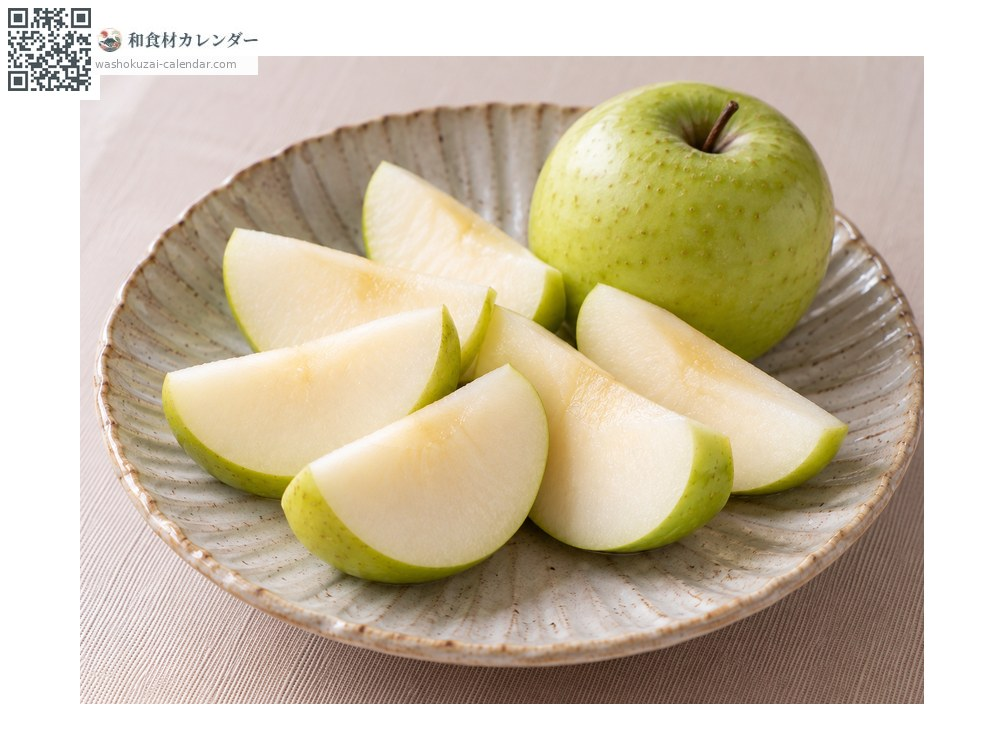
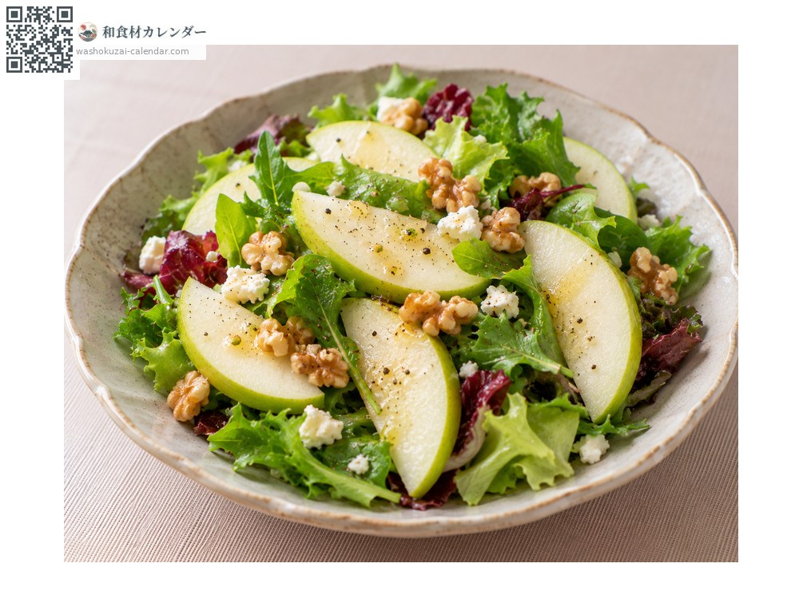
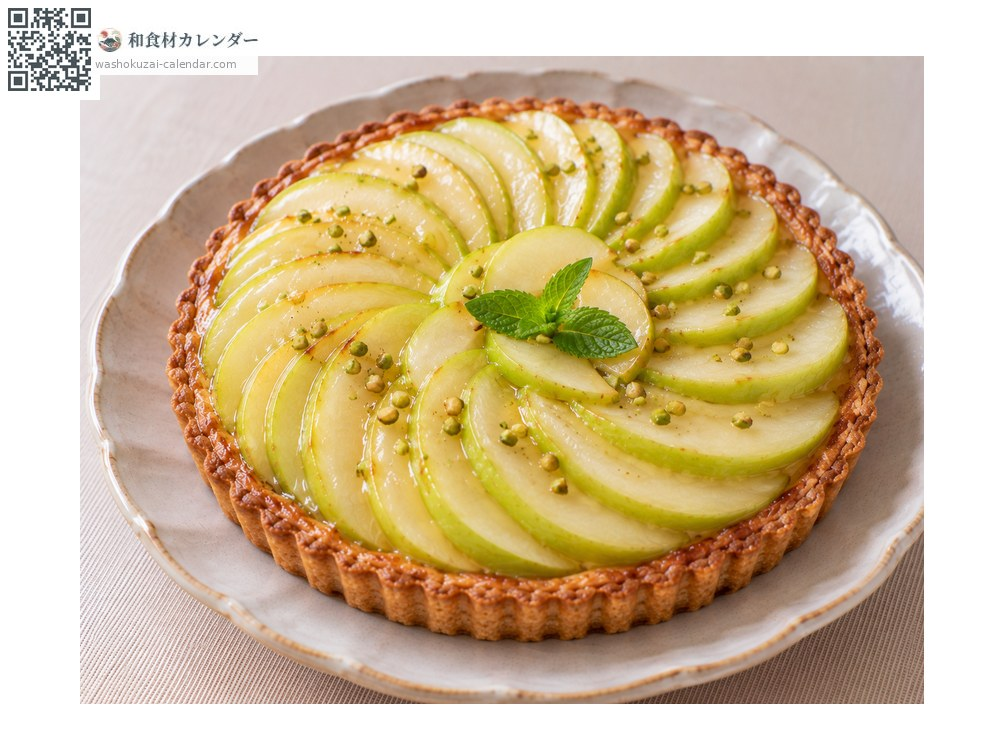
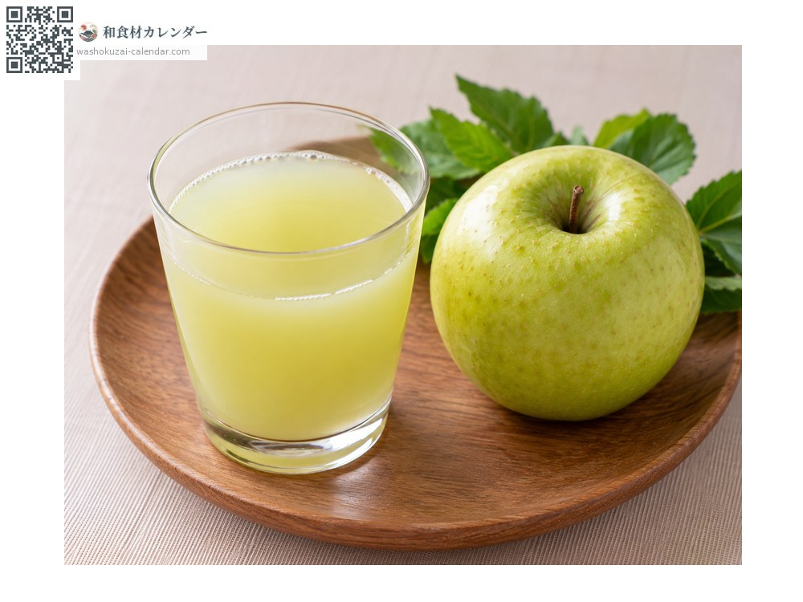

果物
青リンゴ
あおりんご
別名・別表記青りんご、アオリンゴ、グリーンアップル、aoringo
旬は1月・2月・11月・12月

旬の時期
1月
2月
3月
4月
5月
6月
7月
8月
9月
10月
11月
12月
旬出回り
調理法

そのまま
皮ごと食べる。爽やかな酸味と強い香りが身上。

サラダ
薄切りにして加える。彩りと酸味を添える。

タルト
加熱しても煮崩れしにくい。

ジュース
搾ると淡い黄緑色になる。
選び方
皮が鮮やかな黄緑で張りがあり、持って重いもの。香りが立つもの。
保存方法
袋に入れて冷蔵。エチレンガスを出すので他の野菜と分けて保存する。
主な産地
豆知識
代表品種は王林で、青森県で育成された。名は「リンゴの王様」を意味する。ふじのような赤リンゴより酸味が穏やかで香りが強いのが特徴。シナノゴールドやトキなど、黄緑系の品種も青リンゴとして扱われる。